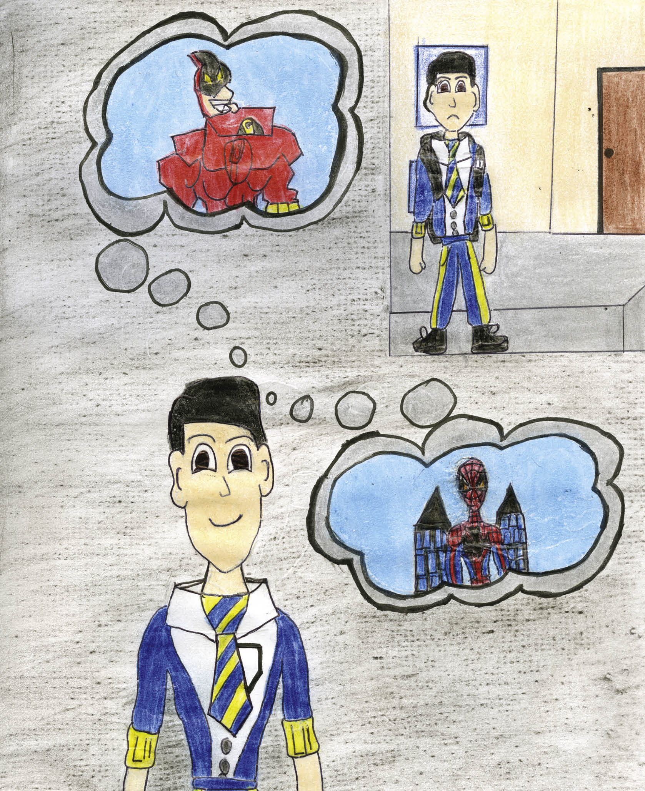
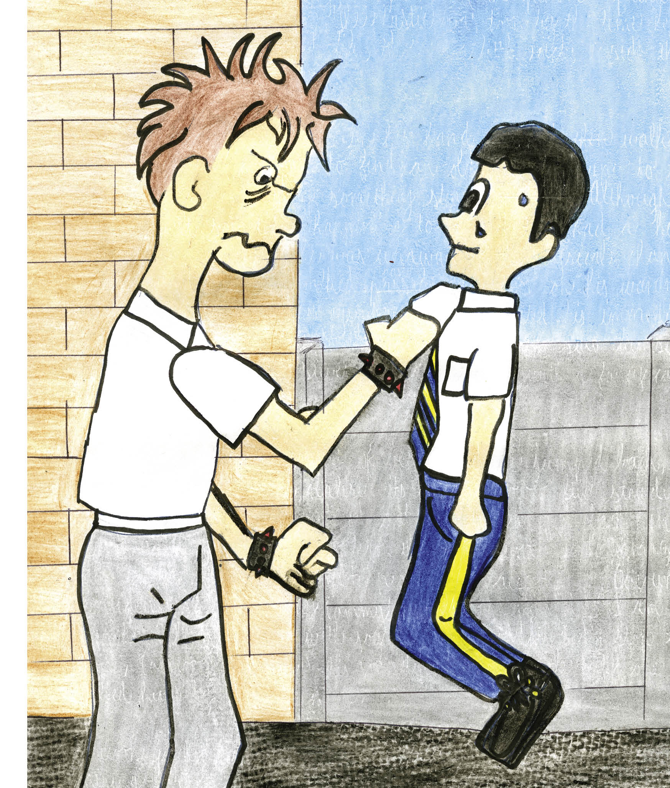
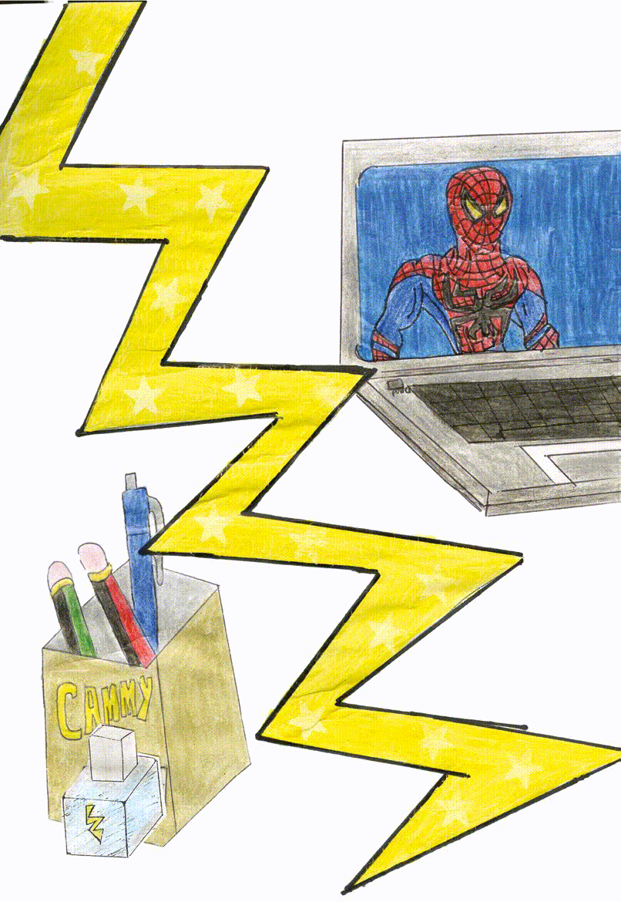

Cameron Snell
Balvenie Primary School
Grade 5
Age 11
In a small primary school was a little boy called Cammy – a shy, hard-working and well-mannered young boy. He was a computer whizz and loved playing computer games. His favourite games were those with superheroes in them.The trouble was that Cammy and his best friend were being haunted every day by a school bully. Cammy’s only escape was his vivid imagination that took him to a world of freedom. Until one day, a strange thing happened…
Once, not so long ago, in a school named Mountain View Primary, there was a boy called Cameron. His family and friends called him Cammy. Cammy and his friends were very close. Cammy was 11 years old and was very shy. He did not have many friends and was usually seen with one friend, Logan. The two of them spent their free time together doing things that they were interested in.
Cammy was small and thin and was fascinated by technology and loved computers. He loved games and spent his free time playing exciting video games. He had a particular fascination with superheroes. He thought that superheroes should really exist, so that they could rid the world of bullying and crime. Cammy had a very vivid imagination and would often pretend to be the superheroes that he saw in movies and in video games.
Cammy also had this obsession with stationery and collecting erasers. He could spend hours in stationery shops finding and buying erasers that were unique. He had many erasers in different shapes and sizes. He had erasers that looked like superheroes, cellphone erasers, transport erasers. Erasers that were hamburger shaped and ice-cream shaped; you name it, he had it.
Although Cammy always did his schoolwork and was an exemplary learner, he was very unhappy at school. Cammy and Logan were haunted by the school bully, John Paul, or JP as the teachers called him. The children called him Giant and he loved this title, because it gave him power and pride. Every child was scared of Giant and no one ever challenged him. On a nice, hot summer’s day, Cammy and Logan were just about to eat their hotdogs that they had bought at the school tuck shop, when Giant grabbed the hotdogs out of their hands and said, “I have a big stomach and I’m as hungry as a lion!”
He picked up Cammy by the shirt and also said: “You two skinny little boys don’t need this. Scram, and don’t you dare tell anyone!”
Giant dropped Cammy on the ground. He laughed and so did his followers. They walked away and left Cammy and Logan feeling very angry, downhearted and completely furious. Cammy and Logan got up and walked away. Cammy’s heart was beating out of his chest. He was also scared stiff.
That afternoon after school, Cammy had calmed down from his terrible ordeal that was now taking place almost daily. Cammy and Logan told no one as they thought that it would just make matters worse. Cammy found refuge by doing the one thing he liked best – going to the local stationery shop to browse around and see what was new. Then something caught his eye. An eraser in the form of an ice-cube fascinated Cammy. It looked like a beautiful crystal. Cammy took this very amazing, beautiful and awesome eraser home. At home, Cammy could not wait to use it. He tried opening it as soon as he walked through the front door at home. He almost walked into the coffee table while rushing to get rid of the plastic packaging that it was wrapped in. The plastic was torn by the time he got the eraser out. It looked like there were little icicles inside the cubed plastic.
Cammy clutched the eraser in his hand and walked to the other side of the room to find an old piece of paper to test it on and then something strange happened. Cammy felt a hair-raising effect … something was happening to him … but he was unaware of the physical changes he had undergone until he walked past the mirror on his wardrobe and something attracted his immediate attention out of the corner of his eye. Cammy looked into the mirror and then saw himself, a superhero dressed in silver, red and yellow with a fancy cape and all.
His heart skipped a couple of beats and he jumped back and put down the eraser as he realised its strange power. Still standing in front of the mirror, he noticed that he had changed back into Cammy. What was at first fear and then shock turned into amazement and then a feeling of complete peace and acceptance. Overwhelming confidence filled his body. Cammy’s wish was granted.
“I am a superhero!” he screamed with joy and jumped on his bed.
“Stop that noise, Cameron!” shouted his grandma, who was the only one who called him by his full name.
Cameron picked up the eraser again … and he felt the hair-raising effect of his transformation once more. He stood in front of the mirror to check out his amazing superhero outfit. By accident, the eraser slipped out of his hand as he was trying to place it into a special place meant for it in his belt. The eraser fell into a glass of water and Cammy then blew on the water to get the eraser out. The water turned into ice. It solidified almost immediately. Cammy blew on the ice once more and then noticed that the room was filled with a cool gentle breeze that was so welcoming on such a hot summer’s day. He then realised what his superpower was. He was now cool, super cool, Captain Cool; no, Captain Cammy Cool. For the first time the next day, Cammy felt happy to go to school. It was the farewell assembly for Mr Robbins, the principal, who was retiring. All the learners including Cammy, were sitting in the quadrangle on concrete slabs, as they had no school hall. It was still early morning, but it was extremely hot – 29 degrees Celsius – and it seemed to be getting hotter by the minute. Yet, Cammy was the only one not getting hot. He had put his eraser in his pocket.
When the assembly started, the learners and teachers were already extremely hot. The children could not sit still and were covering their heads with their hands, trying to create shade for themselves. Cammy noticed this as he was the only one who could protect himself from the heat by using his superpower. Cammy could freeze things or make them cooler.
Just then he thought, “I can use my cool superpower to help my school.” His heart was beating with excitement. He got up and went to the toilet (after his teacher said yes). As he went around the school building, he took out his eraser, immediately changed into superpower mode and jumped up. As he jumped up, he felt himself lifting up and hovering above the ground.
“WOW!” he exclaimed, as he realised that he could also fly.
He flew up onto the roof of the school near to where the assembly was being held. He lifted up his hand towards his mouth and blew into the direction of the school quadrangle. Everyone there sighed as they felt the cool and gentle breeze cooling their bodies. Every person was up and awake and the assembly for the principal could continue smoothly and everyone was happy. Cammy felt very proud to be himself.
Then just as Cammy was about to change back into his normal old self, he heard screaming near the girls’ toilet. He flew closer to that side. He saw Giant pulling a little girl’s hair as she and her friend were trying to go back to the assembly.
“This is going to stop now, today. There will be no more bullying at Mountain View Primary School. This is the last straw. It’s show time!” said Cammy, in a very confident voice. He jumped from the roof and landed face-to-face with the bully, staring into his eyes. “And who’s this now in a funny costume? Hahahaha!” Giant laughed.
Cammy took both of his hands and pointed them towards an open tap, where a boy was drinking water. He drew the water into his hands and threw the water at the feet of the bully. The bully tried to move, but both of his feet were frozen to the ground. He tried to hit Cammy with his hands, but then realised that his hands were frozen as well. When he tried to speak, his lips were frozen together.
“Now you listen and you listen well!” said Cammy. “I am Captain Cammy Cool and I am here to stop you. If I ever see you bullying another child again, I shall take you to a place where you will work and slave for children for the rest of your life!”
This really scared JP.
“You will no longer be known as Giant, you are John Paul, a sweet and well-mannered young boy, who respects everyone.”
Just then, Captain Cammy Cool released John Paul from his grip. For the first time ever, Cammy saw the bully crying. From that day on, there was no more bullying at the school, as Captain Cammy Cool was always there to fight for the rights of the children.